Zennの「機械学習」のフィード
フィード
【Keras実験】ReLU・LeakyReLU・ELU・GELUを比較｜活性化関数の選び方
Zennの「機械学習」のフィード
「活性化関数って結局どれを使えばいいの？」MNISTで4種類を同条件で実験した結果をまとめます。結論：迷ったらReLU、精度を追うならGELUです。 比較した4種類関数特徴主な用途ReLUシンプル・高速。死んだReLU問題あり画像分類全般LeakyReLU負領域も小さく通す。死んだReLUを防止ReLUの代替ELU負領域で指数的に変化。収束が速い深いネットワークGELUガウス分布ベースのスムーズな応答BERT・Transformer系 死んだReLU問題とはReLUは負の入力に対して常に0を返すため、一度活性化され...
13時間前
サポートベクトルマシンの数理 ── 双対問題によるハードマージン・ソフトマージンSVMの導出
Zennの「機械学習」のフィード
はじめにサポートベクトルマシン（SVM）は、分類問題における最も理論的に洗練された手法の一つです。その定式化は制約付き最適化問題として記述され、ラグランジュの双対理論を用いて解かれます。本記事では、まず双対問題の基本的な解法を具体例で確認した上で、SVMのハードマージン・ソフトマージンそれぞれの定式化と双対問題への帰着を導出します。 本記事で扱う内容ラグランジュ双対問題の具体例による理解KKT条件の意味と役割ハードマージンSVMの定式化（概要）ソフトマージンSVMの双対問題への帰着 1. 準備：ラグランジュ双対問題の具体例SVMの理論に入る前に、双対問題の...
16時間前
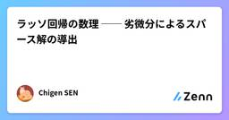
ラッソ回帰の数理 ── 劣微分によるスパース解の導出
Zennの「機械学習」のフィード
はじめに本記事では、 ラッソ回帰（Lasso Regression） のパラメータがどのように決定されるかを、数式を追いながら丁寧に導出します。特に、L1正則化項が微分不可能な点をもつことに着目し、劣微分（subdifferential） の概念を導入することで、パラメータが厳密にゼロになる「スパース性」が自然に生じる仕組みを明らかにします。 本記事で扱う内容ラッソ回帰の誤差関数とその微分劣微分の定義と |x| への適用各場合分けによる最適パラメータの導出スパース性が生まれるメカニズムの考察 1. ラッソ回帰の定式化 1.1 モデルと誤差関数P 個の基底...
16時間前
🤗 HuggingFace完全活用ガイド — Kaggle・NLP・データ分析で即戦力になるための全手順
Zennの「機械学習」のフィード
!動作確認日: 2026年3月12日transformers==4.40.0 / datasets==2.19.0 / peft==0.10.0 で動作確認済み はじめにHuggingFaceは一言で言えば 「AIのGitHub」 です。2026年現在、100万以上のモデル・15万以上のデータセットが公開されており、Kaggleの上位解法ほぼ全てに登場し、NLP研究の標準ツールとなっています。この記事は「とにかく手を動かして使えるようになりたい」人のために書きました。インストールから始まり、Kaggleコンペ提出まで一気通貫で解説します。 対象読者HuggingF...
16時間前
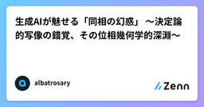
生成AIが魅せる「同相の幻惑」 〜決定論的写像の錯覚、その位相幾何学的深淵〜
Zennの「機械学習」のフィード
導入前回の記事では、Softmax CrowdingとSemantic Driftにより、自己回帰モデルの長時間生成が数学的に必ず破綻することを見た。ではなぜ、我々エンジニアはなお「完璧なプロンプトを与えれば、完璧な出力が得られる」という 決定論的写像（Deterministic Mapping） の幻想に囚われ続けてしまうのか？その答えは、LLMの潜在空間（Latent Space）が持つ位相的連続性が、あまりにも美しく、そして欺瞞的だからだ。本稿では、同相写像（Homeomorphism）、ホモトピー（Homotopy）、計量の歪曲、そして測度論的な位相の断裂を軸に、ハル...
1日前
【Keras実験】学習率スケジューラ5種を比較｜ReduceLROnplateau・CosineDecay・OneCycleなど
Zennの「機械学習」のフィード
「学習率スケジューラって種類が多くてどれを使えばいいかわからない」MNISTで5種類を同条件で実験した結果をまとめます。結論：迷ったらReduceLROnPlateauが最も安定でした。 比較した5種類スケジューラ特徴StepDecay一定エポックごとに段階的に減少ExponentialDecay指数関数的に滑らかに減少ReduceLROnPlateau改善が止まったときだけ自動で減少CosineDecayコサイン波形に沿って滑らかに減少OneCycleScheduler最初に増加→その後急激に減少 実験結果MNIS...
1日前
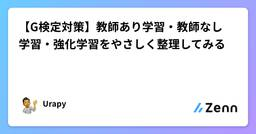
【G検定対策】教師あり学習・教師なし学習・強化学習をやさしく整理してみる
Zennの「機械学習」のフィード
はじめに今回は、G検定でもかなり重要な「機械学習の学習スタイル3兄弟」をまとめます。具体的には、教師あり学習、教師なし学習、強化学習 の3つです。名前だけ見るとちょっと堅そうですが、ここは落ち着いて大丈夫です。イメージとしては、正解を見ながら学ぶのが教師あり学習正解なしでパターンを見つけるのが教師なし学習試行錯誤しながら報酬で学ぶのが強化学習という整理でまずはOKです。本記事は、翔泳社発行の『ディープラーニングG検定公式テキスト』で押さえたい機械学習の整理を、初学者向けにかみ砕いてまとめた復習用ノートとして書いています。 今回のトピック 教師あり学習...
1日前
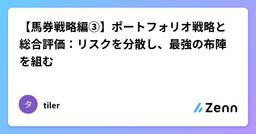
【馬券戦略編③】ポートフォリオ戦略と総合評価：リスクを分散し、最強の布陣を組む
Zennの「機械学習」のフィード
【馬券戦略編③】ポートフォリオ戦略と総合評価：リスクを分散し、最強の布陣を組む はじめに：単一戦略の限界前回までで、単勝や複勝など、各券種ごとに「勝てるルール」を見つけ出しました。しかし、一つの戦略だけで運用することにはリスクがあります。単勝戦略: 回収率は高いが、的中率が低く、不的中が続くと精神的にきつい（ドローダウンが大きい）。複勝戦略: 的中率は高いが、利益率が低く、大きく資産を増やすのが難しい。そこで導入するのが、複数の戦略を組み合わせる**「ポートフォリオ戦略」**です。今回は、異なる性格の戦略を組み合わせ、リスクを抑えながら安定した収益を目指す仕組...
1日前
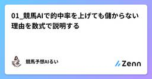
01_競馬AIで的中率を上げても儲からない理由を数式で説明する
Zennの「機械学習」のフィード
最初に信じていた嘘競馬AIを作り始めた頃、私は「的中率50%のモデルを作れれば勝てる」と信じていました。半分当たるなら儲かるはず。そう思っていました。でも現実は違いました。的中率を上げるほど、なぜかROI（回収率）は下がっていった。「当たるけど儲からない」という奇妙な状況が続きました。 的中率とROIの関係を数式で考えるまず、ROIの定義から確認します。ROI = 払戻合計 / 投資合計ROI > 1.0（100%）がプラス収支です。次に、単純なモデルを考えます。ケース1：的中率50%、オッズ1.5倍で買い続ける投資: 100円 × 100回 = 10,0...
1日前
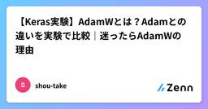
【Keras実験】AdamWとは？Adamとの違いを実験で比較｜迷ったらAdamWの理由
Zennの「機械学習」のフィード
「AdamとAdamWって何が違うの？」「どっちを使えばいいの？」実験結果をもとに答えます。結論：迷ったらAdamWです。 AdamWとは？AdamW（Decoupled Weight Decay Regularization）は2017年に提案されたAdamの改良版です。Adamとの違いは1点だけです。項目AdamAdamWWeight Decayの扱い勾配更新に含まれる独立して適用汎化性能やや劣る良好過学習への耐性弱め強めAdamはL2正則化を勾配更新に組み込むため、減衰効果が不安定になりやすいです。AdamWは重み減衰...
2日前
Dense層（全結合層）とは？畳み込み層との違いをわかりやすく解説【Keras】
Zennの「機械学習」のフィード
KerasでCNNを書くとき、必ず登場するDense層。「なんとなく使っているけど仕組みがよくわからない」という方向けに、畳み込み層との違いを中心にまとめます。 Dense層とは？Dense層（全結合層） とは、前の層のすべてのノードと結合し、重み付き和を計算する層です。計算式はシンプルです。出力 = 活性化関数（入力ベクトル × 重み行列 + バイアス）入力が3個・出力が2個なら、3×2＝6個の重みが学習対象になります。 畳み込み層（Conv層）との違い項目Dense層Conv層接続方式全結合（全ノードが繋がる）局所結合（カーネルで一部を見る）...
2日前
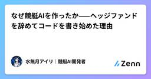
なぜ競艇AIを作ったか——ヘッジファンドを辞めてコードを書き始めた理由
Zennの「機械学習」のフィード
外資系ヘッジファンドを辞めて最初にやったこと。競艇場に行って、1号艇に全ツッパして負けた。あれは1月の平和島だった。ターミナル近くのラーメン屋でかき込んだ昼飯のあと、改札を抜けて初めて競艇場に足を踏み入れた。スタンドに座って、コースの湿った匂いを吸い込んで、なんとなくプログラムをめくって、1号艇に5,000円投げた。1着になると思ったわけじゃない。競艇のことを何も知らなかったから、とりあえず枠が一番内の艇を選んだだけだ。その日の第7レース、1号艇が2コース艇に差されて2着。払い戻しはゼロ。5,000円が消えた。財布の中身より心が痛んだ。でも帰り道に気づいた。この市場、データで殴...
2日前

1-bit LLMってなに？BitNetを調べたら「え、これって革命じゃない？」ってなった話
Zennの「機械学習」のフィード
GitHub Trendingを眺めていたら、microsoft/BitNet がいきなり2,000以上スターを集めていて気になりました。「1-bit LLM」ってなんぞ？ と思って調べたら、思ってたより全然すごい話だったので共有します。 普通のLLMはどうなってる？まず前提として、GPTとかClaudeとかのLLMは、「重み（パラメータ）」と呼ばれる数値の塊でできています。普通はこの重みを 32bit浮動小数点数 や 16bit浮動小数点数 で表現しています。数が細かいほど精度が上がるけど、その分メモリも計算コストもかかる。普通のLLM: 一つの重み = 0.3847219...
2日前
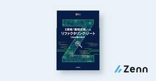
E資格「最短合格」へのリファクタリング・ノート【Java屋の視点】
Zennの「機械学習」のフィード
【著者のスタンス】私はJavaを中心としたバックエンドエンジニアです。AI特有の「ふんわりした数式」やPythonの「動的な挙動」にはイライラしました。だからこそ、「Javaエンジニアが納得できるように、論理的に、かつシステム的に」AIの知識を再構築してノートにまとめました。これは、天才データサイエンティストのための本ではありません。「現場で戦うエンジニアが、E資格という壁を最短で突破するための武器」です。無駄を嫌い、効率的に合格点を取りたい多忙なエンジニア向け。学習のボトルネック（数式）を解消し、合格ラインへ最速で到達するための思考のログ。
2日前
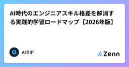
AI時代のエンジニアスキル格差を解消する実践的学習ロードマップ【2026年版】
Zennの「機械学習」のフィード
AI時代のエンジニアスキル格差を解消する実践的学習ロードマップ【2026年版】 はじめに2026年現在、AI技術の急速な進歩により、エンジニア間でのスキル格差が顕著になっています。ChatGPT、Claude、Geminiといった大規模言語モデル（LLM）の普及により、AI を活用できるエンジニアとそうでないエンジニアの生産性に大きな差が生まれています。本記事では、AI時代に取り残されないための体系的な学習戦略と、実際のコード例を交えた実践的なスキル習得方法について詳しく解説します。 AI時代のエンジニアスキル格差の現状 生産性格差の実態最新の調査によると、AI ツ...
2日前
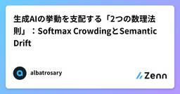
生成AIの挙動を支配する「2つの数理法則」：Softmax CrowdingとSemantic Drift
Zennの「機械学習」のフィード
導入昨今、ITエンジニアの界隈では「ChatGPTとClaude、どちらの精度が高いか」「Geminiの超広大なコンテキストウィンドウがあればRAGは不要か」といった、ツールの比較検証が日夜行われています。しかし、厳しい現実を言えば、「どのAPIを選び、どのプロンプトテクニックを駆使するか」といった議論は、極めて表層的な問題に過ぎません。生成AIを実際のアプリケーションやシステムに組み込む上で、私たちが最も直視すべきなのは「ベンダーごとのカタログスペック」ではなく、すべての自己回帰型LLMの根底に流れる 「逃れられない数学的な限界」 です。どれほど優秀なモデルであっても、内部...
2日前
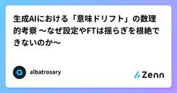
生成AIにおける「意味ドリフト」の数理的考察 〜なぜ設定やFTは揺らぎを根絶できないのか〜
Zennの「機械学習」のフィード
1. 導入「システムプロンプトでガチガチにキャラクター設定を書いたのに、会話が長くなるといつの間にか忘れられている」「ファインチューニング（FT）で専門知識を学習させたのに、たまに全く関係のない嘘をつく」LLMを使った開発をしていると、誰もが一度はこんな経験をするのではないでしょうか。この現象は意味ドリフト（Semantic Drift） と呼ばれます。多くの人は、これを「プロンプトの書き方が甘いからだ」「履歴の持たせ方が悪いからだ」と考え、試行錯誤を繰り返します。しかし、結論から言ってしまうと、プロンプトの工夫だけでこの問題を完全に解決することはできません。なぜなら、意味ド...
2日前
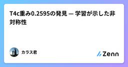
T4c重み0.2595の発見 — 学習が示した非対称性
Zennの「機械学習」のフィード
ハエの天敵は、空から来る。鳥、ヤモリ、クモ。1億年の進化の中で、ショウジョウバエは「上からの危険」を最優先で検出するよう最適化された。その痕跡が、T4cの重みに刻まれている。T4c = 0.2595 ← 4方向で最大T4a = 0.2408T4b = 0.2495T4d = 0.2503 学習が暴いた矛盾v2で「全方向均等looming」を学習させたとき、T4cだけが生物値を下回った。方向生物値学習後変化T4a（前）0.24080.2513+0.0105T4b（後）0.24950.2510+0.0015T4c（上）0....
2日前
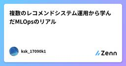
複数のレコメンドシステム運用から学んだMLOpsのリアル
Zennの「機械学習」のフィード
はじめにこんにちは、とある事業会社でMLエンジニアをやっている者です。いま私がいる会社では、運用中のレコメンドシステムがいくつかあります。この記事では、複数のレコメンドを運用して得られた学びや、そこから考える今後進めていくMLOpsの方向性について書きたいと思います。教科書的ではないリアルなMLOpsに興味がある方、レコメンドシステムを運用中の方の参考に少しでもなれば嬉しいです。!この記事の内容は個人の見解に基づいています。所属する会社の公式見解を表すものではありません。 今いる会社でのレコメンド事例 ほぼ使われなくなった系 (レコメンドA, B)レコメン...
2日前
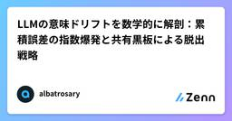
LLMの意味ドリフトを数学的に解剖：累積誤差の指数爆発と共有黒板による脱出戦略
Zennの「機械学習」のフィード
TL;DR生成AIとの長文対話で必ず起きる「意味ドリフト（話のズレ）」の正体は、自己回帰生成におけるCompound Error（指数的正解率減衰）と、超高次元空間でのランダムウォークである。この数学的崩壊を防ぐには、履歴への依存を捨て、「履歴リセット＋共有黒板」によってエントロピーの再正規化を行うしかない。本記事ではその数理的証明と、ターミナルを活用した実践的な解決策を提示する。 1. 導入：AIが「ボケ」るのを止められない理由「AIとの対話が長くなると、急に話が噛み合わなくなる」「一度間違った前提を信じ込むと、何度指摘しても修正されない」最近の高性能なモデル（Clau...
3日前